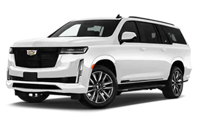
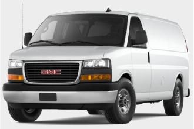
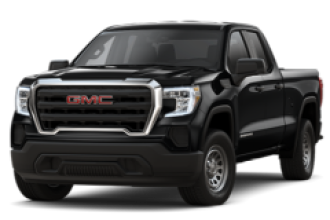

| Features\BodyType | Sedan | SUV | Van | Pick-up Truck |
|---|---|---|---|---|
| Seats | 2 to 5 | 5+ | 7+ | 5 to 6 |
| Fuel Efficiency | Great | Poor | Poor | Poor |
| Number of Compartments | 3 | 2 | 2 | 3 |
| Trunk Space | Small | Small to Moderate | Small to Moderate | Large |
| Foldable/Removable Seats | No | Yes | No | Yes |
| All-Wheel, 4-Wheel, or 2-Wheel Drive | Typically 2-Wheel | All-Wheel or 4-Wheel | Typically 2-Wheel | All-Wheel or 4-Wheel |
| Ground Clearance | Low | High | Low | High |
| Off-Road Potential | Poor | Great | Poor | Great |
| Doors | 2 to 4 | 3 to 4 | 3 to 4; Sliding and/or Read Doors | 2 to 4 |
Vehicle Body Types
As you're probably aware, vehicles come in different body types. Depending on your needs one body type will be more suitable for you compared to other body types. Here's what you need to know about 4 of the most common body types: sedan, SUV (sports utility vehicle), vans, and pick-up trucks.
Body Types Table Summary
Body Types
Sedan
|
Sedan's are a very common type of car, but if you're new to vehicles, you might not even know what it is. Sedan's basically have three compartments - the engine, passenger, and trunk. The engine compartment is in the front. The passenger compartment is in the middle and is closed off from the other two compartments. The trunk (also known as cargo) compartment is in the back. Like we mentioned, this is closed off from the passenger compartment unlike SUVs and vans which have their passenger and trunk space open to one another. Sedan's typically seat 4 to 5 people and are mainly meant to be driven on man-made roads. |
SUV
|  |
Like the sedan, SUVs are a very common type of car and have a similar body. The main difference is that there are only two compartments. The SUVs engine has its own compartment, but the passenger and trunk space are together in the second compartment. SUVs can seat 5 people, but it's not uncommon for an SUV to seat 7+ people. The bodies of SUVs have higher clearance from the ground, have more powerful suspension systems and typically have 4-wheel or all-wheel drive. This means they're more capable of maneuvering on rough terrain compared to sedans. |
Vans & Minivans
|  |
Vans (and minivans) are similar to SUVs. They both have two compartments with the engine in its own compartment, while the passenger and trunk compartments are together. They also usually seat 7+ people which make them fairly large. However, vans don't have the same off-road capabilities as SUVs. This is because they usually have less clearance from the ground and may not offer 4-wheel or all-wheel drive. On the bright side, they have more space in the passenger-trunk compartment since they'll be more likely to have removable or foldable seats. Vans typically have sliding doors on the side and/or rear doors. |
Pick-up Trucks
|  |
Pick-up trucks are like sedans in that they have three compartments; engine, passenger, and trunk. What distinguishes a pick-up truck from other vehicle body types is the cargo bed of the trunk compartment. The cargo bed is spacious and has a metal surface, making it very durable regardless of what you store in it but it also makes trucks large overall. Cargo beds can be covered. One type of cover is called a tonneau, which is a flat cover that only goes up to brim of the cargo bed. Another type of cover is called a camper shell. Camper shells provide cover up to the top of the roof of the passenger compartment. Because of this, camper shells also have rear and side windows. Pick-up trucks also have high-ground clearance, strong suspension, and 4-whell or all-wheel drive. This makes them similar to SUVs in being able to maneuver well even when off-road. |